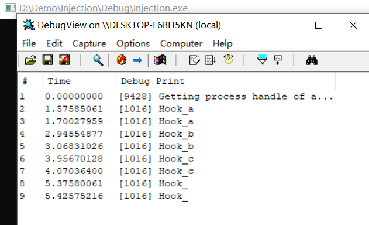
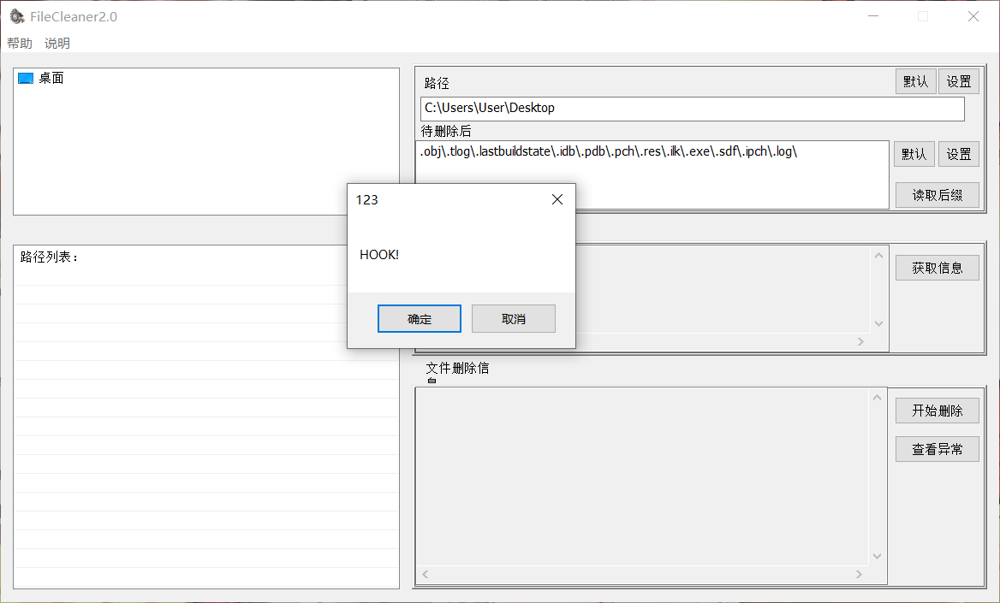
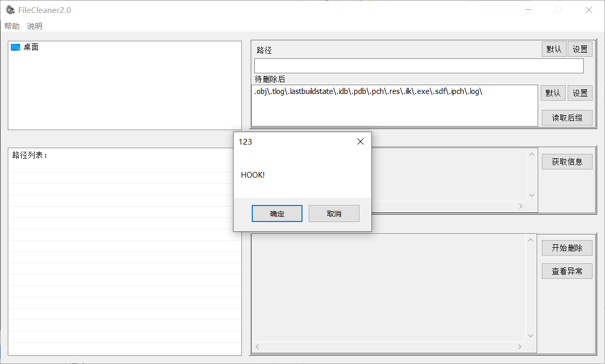

dll注入技术
DLL注入的初始动力源自于程序员对其他第三方应用程序进行功能扩展的愿望，现在的DLL注入仍然是构成系统复杂功能，或对应用程序实现复杂操作的基础支撑技术。通过CreateRemoteThread()进行DLL注入的操作就是众多DLL注入技术的一种
目前公开的DLL注入技巧：
- 注册表注入
- ComRes注入
- APC注入
- 消息钩子注入
- 远线程注入
- 依赖可信进程注入
- 劫持进程创建注入
- 输入法注入
1 | 远程线程注入 |
1 | Dll1.dll |
windows下的Hook技术
Hook是程序设计中最为灵活多变的技巧之一，在Windows下，Hook有两种含义：
- 系统提供的消息Hook基址
- 自定义的Hook编程技巧
其中，由系统消息提供的消息钩子基址是由一系列的API提供的一种服务，这个系列的API可以完成对大多数应用程序关键节点的Hook操作，为此，Windows为每种Hook类型维护了一个钩子链表，我们可以通过一个系统API来完成对整个系统中所有符合此机制的关键点Hook。
另一种自定义的Hook编程技巧则是基于特定系统结构、文件结构、汇编语言的一种高级技术。
系统消息Hook
Windows操作系统是以事件驱动的。事件被包装成了消息发送给窗口，比如点击菜单，按钮，移动窗口，按下键盘，正常消息：
- 当按下键盘，产生一个消息，按键消息加入到系统消息队列
- 操作系统从消息队列中取出消息，添加到相应的应用程序的消息队列中
- 应用程序使用消息泵从自身的消息队列中取出消息WM_KEYDOWN，调用消息处理函数
我们可以在系统消息队列到程序消息队列之间添加消息钩子，从而使得在系统消息队列消息可以发给应用程序之前捕获到消息。
可以多次添加钩子，从而形成一个钩子链，可以依次调用函数。
消息钩子是windows操作系统提供的机制，即spy++截获窗口消息的功能就是基于这样的机制。
1 | main() |
1 | dllmain.cpp(Dll1.dll) |
使用DebugView查看输出结果

能够设置的钩子类型
| 宏值 | 含义 |
|---|---|
| WH_MSGFILTER | 截获用户与空间交互的消息 |
| WH_KEYBOARD | 截获键盘消息 |
| WH_GETMESSAGE | 截获从消息队列送出的消息 |
| WH_CBT | 截获系统的基本消息，譬如：窗口的创建、激活、关闭、最大最小化、移动等等 |
| WH_MOUSE | 截获鼠标消息 |
| WH_CALLWNDPROCRET | 截获目标窗口处理完毕的消息 |
自定义钩子
钩子的主要含义其实就是改变程序原有的执行流程，让程序执行我们自己的代码。我们也可以通过修改程序代码的方式来实现这一点
1 | //注入代码 |
内联HOOK
1 |
|
也可以把代码注入到其他进程中

IAT HOOK
1 | // dllmain.cpp : 定义 DLL 应用程序的入口点。 |
1 | // Injection.cpp : 此文件包含 "main" 函数。程序执行将在此处开始并结束。 |
